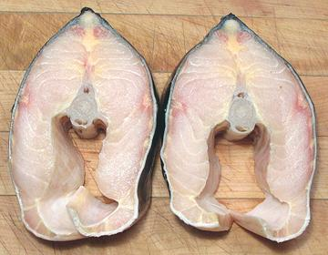

This is the third largest sturgeon in the world, growing to 20 feet and 1800 pounds. It is largely a seagoing sturgeon, from the southern tip of Alaska to Monterey Bay, California, and reported farther south. These fish traditionally returned from the sea to fresh water to spawn, but now many are land locked due to dams on the rivers.
IUCN rated LC (Least Concern), probably due to California's notorious "over regulation", but it is considered vulnerable in Canada. It is heavily farmed in California for production of caviar, with meat as a byproduct. Experts say the quality of California caviar has improved to the point it is difficult to tell it from the Russian. Photo © lost track.
More on Sturgeon Family and Caviar.
 As California gradually establishes itself as a major producer of high grade caviar, there is a growing amount of sturgeon fish available. As with veal in the dairy business, male fish have to be disposed of, and if they can bring in some income, raising them for sale is a good idea. Also, in harvesting caviar, the female fish is killed, making for yet more fish available.
The problem here is, Americans are not all that adventurous where fish are concerned and sturgeon is just not yet within their comfort zone, nor is it in the comfort zone of the supermarket chains. The big fish eaters, Filipinos and other Southeast Asians, are completely unfamiliar with Sturgeon.
Here in Los Angeles the situation is a bit different. We have the largest Persian population of any city outside Iran and enough Russians to reinstate the Tzar. We have enough people from the Caspian Sea region in general that several of the ethnic markets here stock fresh sturgeon when available.
Surgeon is, in my opinion, an excellent eating fish with medium mild flesh and good texture - firm but it will still flake apart. It reminds me of shark, a fish with which it shares a number of physical characteristics, though they are not closely related.
Buying: Sturgeon can be found in markets serving Russian and Persian communities. It's a large fish, so it's sold mainly in the form of steaks, as in the photo to the left. These steaks were 5-1/2 inches high, 3-1/2 inches across and weighed 11-3/8 ounces each.
Skin: The skin shrinks only moderately when heated and has no strong or off flavor. It is good to eat if you like gelatinous things as I do. It reminds me a bit of catfish skin which is also often left on when cooking, only thicker. You must, however, be aware that some bony armor plates will be found embedded in the skin.
Cooking: Sturgeon remains very firm when cooked. I usually cook steaks by poaching in an aromatic court bouillon - about 20 minutes because they're quite thick. I'm sure they could also be grilled like shark, and they should work fine baked, broiled or steamed, and especially cut into chunks for soup.